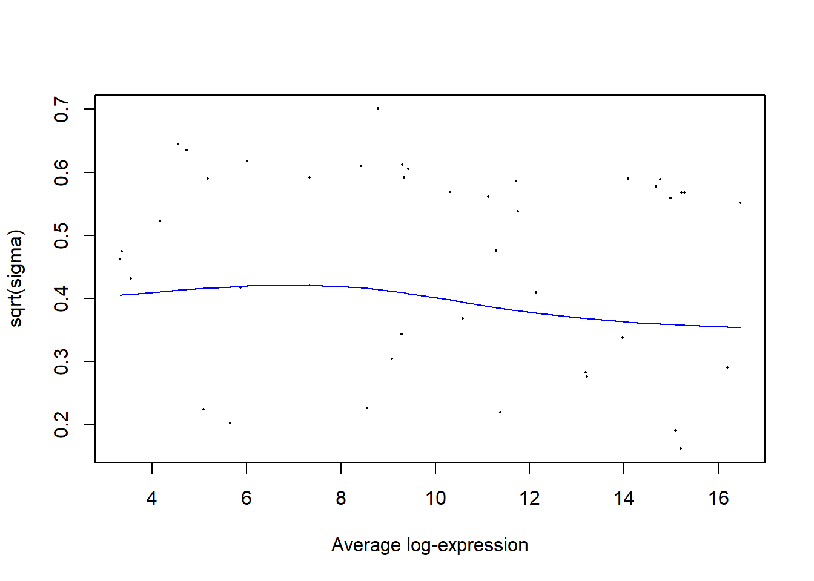

Running Differential Testing using the Limma Package on Non RNA-seq Data
Author
Mick Lee
This page is to document an example of running mass-spectrometry (Non RNA-seq data) using the LIMMA R package. For more information, please refer to the user guide: https://bioconductor.org/packages/devel/bioc/vignettes/limma/inst/doc/usersguide.pdf
Getting Started:
Below is an example run for two sample analysis (Three biological replicates)
###Install packages###require(ggplot2)
Loading required package: ggplot2
Warning: package 'ggplot2' was built under R version 4.3.3
require(gplots)
Loading required package: gplots
Warning: package 'gplots' was built under R version 4.3.3
Attaching package: 'gplots'
The following object is masked from 'package:stats':
lowess
require(RColorBrewer)
Loading required package: RColorBrewer
require(scales)
Loading required package: scales
Warning: package 'scales' was built under R version 4.3.2
Define groups and Design matrix + Differential Testing
Define groups (in this case D37 vs NASH), design matrix, and fit contrasts between two groups for differential testing between two groups & fitting linear regression using limma
# Define the sample groupsgroup <-factor(c(rep("D37", 3), rep("NASH", 3)))# Create the design matrixdesign <-model.matrix(~0+ group)# Define contrasts (comparing NASH with D37)contrast.matrix <-makeContrasts(NASHvsD37 = groupNASH - groupD37,levels = design)# Perform differential expression analysis using limmafit <-lmFit(ms, design)fit <-contrasts.fit(fit, contrast.matrix)fit <-eBayes(fit)fit2<-eBayes(fit, trend=TRUE)plotSA(fit2)

Note
The above variance plot which show stabilization of the variances nicely as seen from the horizontal trendline from plotSA()
Extract, summarize the results and bind data
# Extract and summarize the resultsresult<-topTable(fit, coef ="NASHvsD37", number =nrow(ms))#merge result with msNASHvsD37<-cbind(ms,result)NASHvsD37$sig=NASHvsD37$adj.P.Val<0.05&abs(NASHvsD37$logFC)>=0.5head(NASHvsD37)
The logFC column is the slope of the regression line, and the AveExpr column is the average of the values for the protein row (same as rowMeans()). AveExpr can also be the y-intercept of the regression line when the predictor is mean-centered. The actual y-intercept is AveExpr−avg(AGE)⋅logFC . The other columns are t moderated t-statistic P.Value p-value adj.P.Val p-values adjusted with the Benjamini-Hocheberg procedure B log-odds of differential expression
Plot PCA
plot PCA of samples to show unsupervised clustering based on sample data